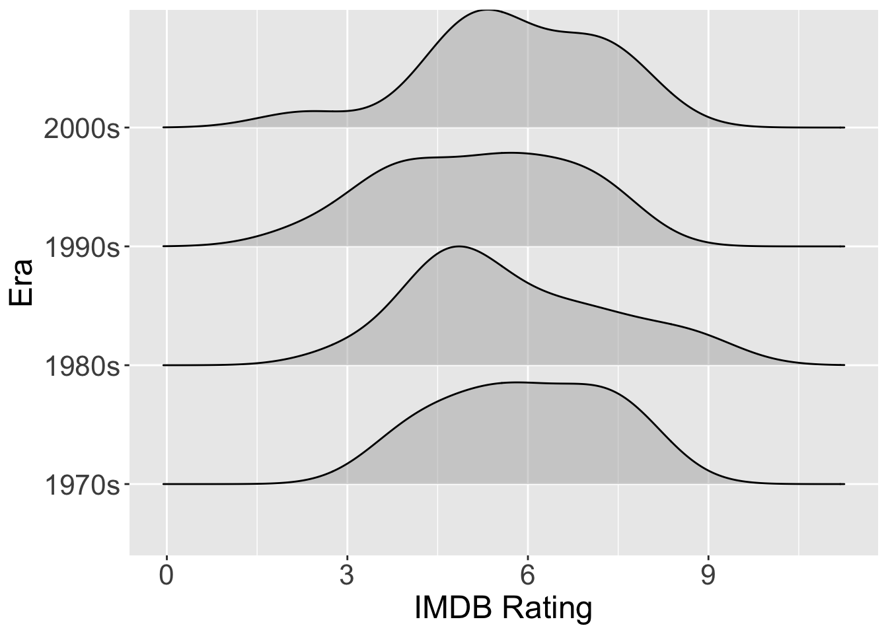
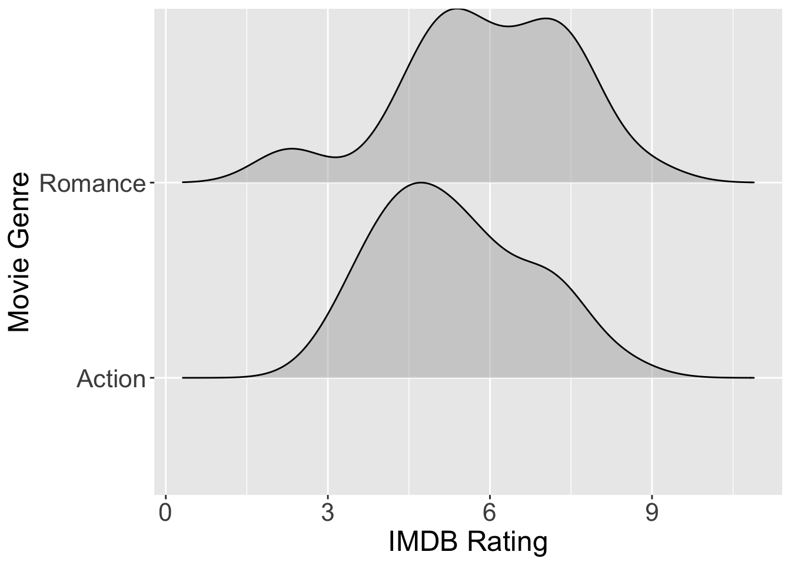
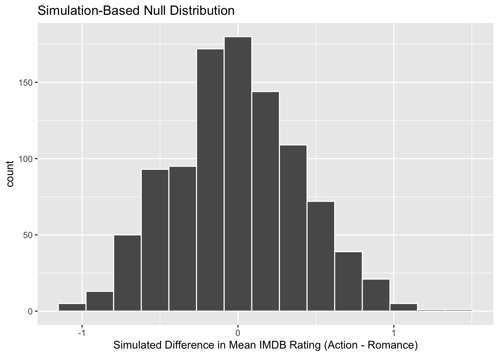

One-Way ANOVA to Two-Way ANOVA Model Selection Process
We will be using a “forward” selection process for deciding on the “best” ANOVA model. Meaning, we will start with a simple model and keep adding complexity until it seems like the complexity isn’t “worth it.”
Step 1 – Visualize each model


Are the groups different?
We are looking to see if the mean of the response variable (IMDB rating) differs between the explanatory variable groups (genre or era). Based on these visualizations, it doesn’t seem like the mean IMDB rating differs based on the era or the genre of the movie.
Step 2 – Decide what method should be used
We have two methods to choose from when performing a one-way ANOVA — theory-based or simulation-based. The decision for which method to use is decided by the conditions of our analysis. Specifically, the normality condition is what dictates which method we use.
Based on the density ridge plots, it appears that both genres have about the same spread. For the eras, it looks like movies from the 2000s have the largest spread, but it is not much greater than the 1970s. So, I would say the equal variance condition is not violated.
Most of these density plots are unimodal and fairly symmetric. The most problematic distribution is the romance movies, with three different modes.
Since the romance group is 1/2 of the genre groups, I don’t feel great using theory-based methods for this one-way ANOVA.
I do, however, think using theory-based methods for testing the eras would be okay!
Step 3 – Fit the model(s)
Testing era
aov(rating ~ era, data = movies) %>%tidy()
# A tibble: 2 × 6
term df sumsq meansq statistic p.value
<chr> <dbl> <dbl> <dbl> <dbl> <dbl>
1 era 3 4.59 1.53 0.669 0.575
2 Residuals 52 119. 2.28 NA NA
With a p-value of 0.575 (from an F-statistic of 0.669 with 3 and 52 degrees of freedom) at a significance level of 0.1, I fail to reject the null hypothesis. Thus, the data have unconvincing evidence that the mean movie rating differs for at least one era.
Hypotheses
The era line of the ANOVA table is testing the following hypotheses:
\(H_0\): The mean movie rating is the same for every era
\(H_A\): The mean movie rating is different for at least one era
Testing genre
Two groups
Note that genre has only two levels—action and romance. So, when using simulation-based methods, we need to use a "diff in means" statistic instead of an "F" statistic.
obs_diff <- movies %>%specify(response = rating, explanatory = genre) %>%calculate(stat ="diff in means", order =c("Action", "Romance") )permutation_dist <- movies %>%specify(response = rating, explanatory = genre) %>%hypothesise(null ="independence") %>%generate(reps =1000, type ="permute") %>%calculate(stat ="diff in means", order =c("Action", "Romance") )visualise(permutation_dist) +labs(x ="Simulated Difference in Mean IMDB Rating (Action - Romance)")

get_p_value(permutation_dist, obs_stat = obs_diff, direction ="two-sided")
# A tibble: 1 × 1
p_value
<dbl>
1 0.184
With a p-value of 0.184 from an observed difference in means of -0.578 at a significance level of 0.1, I fail to reject the null hypothesis. Thus, the data have unconvincing evidence that the mean movie rating of action movie is different from romance movies.
Hypotheses
For our hypothesis test, we are testing if the mean movie rating is different for at least genre, but technically there are two genres (action, romance). So, we are actually testing following hypotheses:
\(H_0\): The mean movie rating is the same for romance and action movies
\(H_A\): The mean movie rating is different for romance and action movies
Step 4: Decide How to Proceed
You will decide what model to fit next depending on the results of your one-way ANOVA models.
If you failed to reject the null hypothesis for either one-way ANOVA models…
You do not fit any additional models.
If you rejected the null hypothesis for both one-way ANOVA models…
your next step is to fit an additive two-way ANOVA model
Additive two-way ANOVA
In Week 10 we will learn about additive and interaction two-way ANOVA models, so you will have the tools to fit these additional models then!